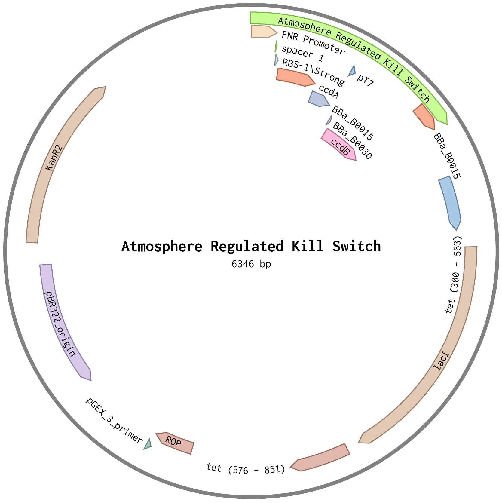

We have contributed 5 new parts to the registry. They include three basic parts and 2 composite parts. These parts have been designed and optimised for production and secretion of our gene of interest. We have added literature and constants (wherever applicable) for each of these parts along with the relevant mathematical models that describe their working to the Registry.
Basic Parts
| Name | Type | Description | Designer | Length |
|---|---|---|---|---|
| BBa_K3512000 | Coding | Sugarcane Invertase Inhibitor | Gourav Saha, Naman Chaudhary, Suhas Badadal | 576 |
| BBa_K3512001 | Coding | ccdB Toxin | Gourav Saha, Naman Chaudhary, Suhas Badadal | 306 |
| BBa_K3512002 | Coding | ccdA Toxin | Gourav Saha, Naman Chaudhary, Suhas Badadal | 221 |
Composite Parts
| Name | Type | Description | Designer | Length |
|---|---|---|---|---|
| BBa_K3512012 | Device | pFruB-Cra System | Gourav Saha | 3104 |
| BBa_K3512042 | Device | Atmosphere Regulated Killswitch | Gourav Saha | 958 |
Plasmid Design

Figure 1: Plasmid for the pFruB-Cra Module

Figure 2: Plasmid for the Atomsphere-regulated Kill Switch